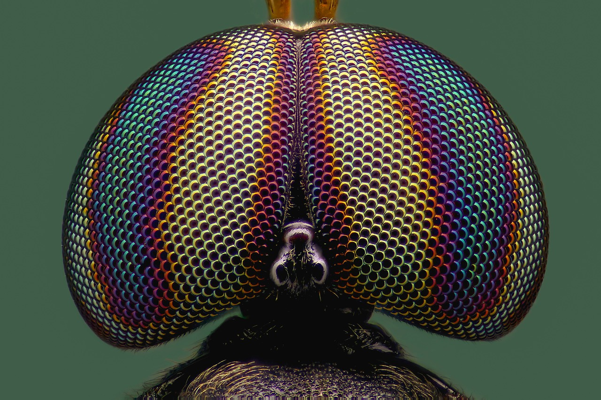

"Wieviele Beine hat eine Spinne?"
Spinnen haben immer acht Beine und zwei Körperglieder, Insekten hingegen haben immer sechs Beine und drei Körperglieder.

"Zu welcher Tierart gehört die Rasse 'Maine Coon'?"
Die Maine Coon ist die größte und schwerste Katzenrasse der Welt und liebt es draußen in der Natur zu sein. Sie wird auch als „Sanfter Riese“ bezeichnet.

"Welcher der folgenden Vögel kann nicht fliegen?"
Der Strauß kann zwar nicht fliegen, aber dafür kann er eine halbe Stunde lang mit 50 Kilometern pro Stunde laufen. So schnell dürfen bei uns teilweise die Autos in den Städten fahren! Während kürzerer Zeit schafft er sogar 70 Stundenkilometer.

"Welches Tier ist ein Beuteltier?"
Koalas sind nachtaktive Beuteltiere, die in Australien in Eukalyptusbäumen leben und nur Eukalyptus-Blätter und -Rinde frisst. Der Koala ist eng verwandt mit den Kängurus, sie sind beide die wichtigsten Symbole Australiens.

"Eine Biene ist ein ...?"
Bienen gehören zu den Insekten und haben sechs Beine, vier Flügel und einen Panzer.

"Ein Tausendfüßler hat durchschnittlich etwa wieviele Füße?"
Ca. 400. Je nach Art besitzen sie zwischen acht und maximal 340 Beinpaare, also insgesamt höchstens 680 Beine.
"Was ist eine "Schwarze Witwe"?"
Die schwarze Witwe ist eine kleine Spinne. Ihr Durchmesser (mit Beinen gemessen) beträgt etwa 4 cm, die Körperlänge nur 1 cm.

"Wie schlafen Giraffen?"
Giraffen schlafen immer nur ein paar Minuten am Stück, insgesamt nur wenige Stunden am Tag - im Stehen.

"Welcher Vogel baut kein eigenes Nest?"
Der Kuckuck baut kein eigenes Nest, sondern legt seine Eier in fremde Nester. Sein Junges schlüpft früher als die der anderen Vögel und wirft dann die «Konkurrenz» aus dem Nest.
.jpg)
"Welche Art von Augen besitzen Insekten?"
Insekten haben Facettenaugen. Sie sind aus hunderten Einzelaugen zusammengesetzt. Aus all diesen Einzelbildern wird im Gehirn das Gesamtbild gebildet.
"Welches ist das größte aktuell lebende Säugetier?"
Der Blauwal ist das grösste Säugetier. Er kann bis zu 31 Meter lang werden und ist mehr als 100 Tonnen schwer.
"Was ist eine Meerkatze?"
Eine Meerkatze ist eine Affenart, die in verschiedenen Regionen Afrikas lebt.

"Welches Raubtier lebt sowohl in Europa, als auch in Asien und Amerika?"
Der Luchs ist auf 3 Kontinenten zu Hause: in Europa, Asien und in Nordamerika. In Europa steht er unter Naturschutz. Hier ist z.B. in Skandinavien der Nordluchs beheimatet. Auch in Südosteuropa streifen vereinzelt Luchse durch die Wälder.

"Welches ist das langsamste Säugetier?"
Das Faultier bewegt sich mit 0.12 km/h vorwärts, also fast in Zeitlupe, und ist damit das langsamste Säugetier.
"Wie heisst der ausgestorbene Vorfahre unserer heutigen Vögel?"
Vor 150 Mio. Jahren lebte der Archäopteryx. Er war ein Nachkomme der Fleisch fressenden Dinosaurier und Vorfahre unserer heutigen Vögel.
"Bei welcher Tierart trägt das Männchen die Jungen aus?"
Bei den Seepferdchen trägt das Männchen die Jungen aus. Das Weibchen legt die Eier in einen Beutel des Männchens. Dieses trägt den Nachwuchs ungefähr 2 bis 6 Wochen bis zur Geburt aus.
"Wie schlafen Fische?"
Fische schlafen im Wasser mit geöffneten Augen. Sie sind so allzeit bereit, vor einem Feind zu fliehen.

"Warum gibt es den "Grossen Panda" so selten?"
Der Grosse Panda frisst ausschliesslich Bambus. Der Bambus stirbt aber nach der Blüte ab. Wenn alle Bambuspflanzen gleichzeitig blühen, müssen die Pandas anschliessend hungern. Viele überleben das nicht.

"Was frisst der grösste aller Fische, der Walhai, am liebsten?"
Der Walhai, der bis zu 20 Meter lang werden kann, ist ein harmloser Fisch. Er ernährt sich von kleinen Fischen und Plankton, die er aus dem Wasser filtert.
"Was können Katzen besonders gut?"
Die Augen von Katzen vermitteln ein besonders gutes räumliches Bild. Katzen können Entfernungen genau abschätzen und auch kleinste Bewegungen wahrnehmen.